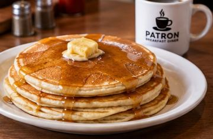
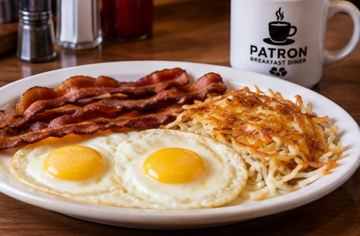
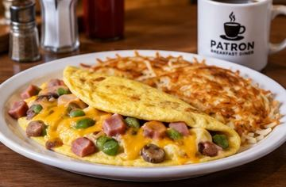
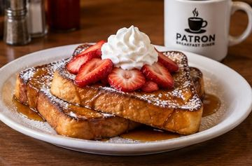
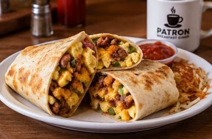

CLASSIC
Stacked Pancakes
Golden pancakes served hot with butter and syrup.

Classic diner favorites, hearty Tex-Mex breakfasts and lunch served fresh every day in Kemah.


Start your day with a warm, inviting neighborhood diner experience. Patron serves classic American breakfast favorites alongside Mexican-inspired plates, plus lunch options for the whole family.
Whether you're grabbing breakfast, meeting friends, bringing the family or planning an event, we're here to make it a good one.
COME SEE US →From corporate meetings to family gatherings, ask about catering options for your next event.
ASK ABOUT CATERING
